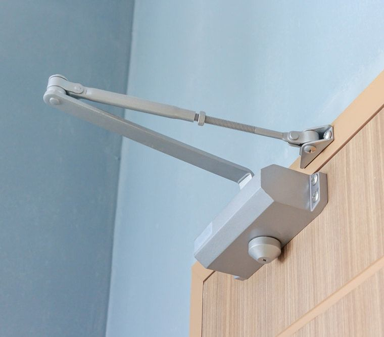
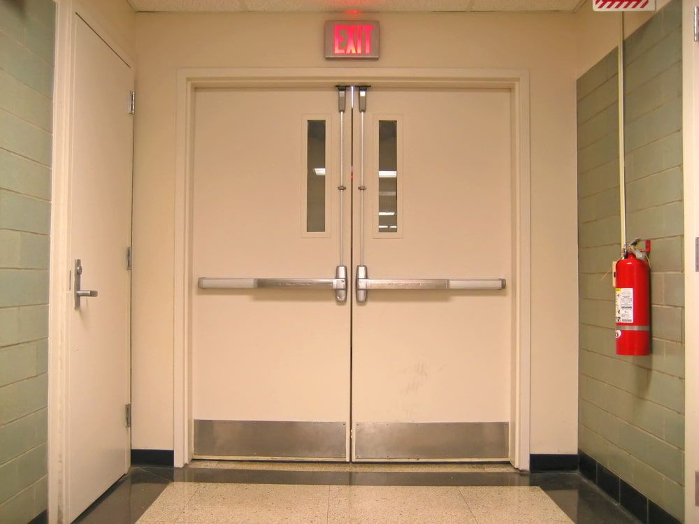

On this page
AT A GLANCE
Door closers are ever present in modern buildings, providing both convenience and security by ensuring doors close automatically after opening. Retail and trade customers can buy over the counter at our Bundall (Gold Coast) and Ballina showrooms.
Range Of Door Closers

Door closers are ever present in modern buildings, providing both convenience and security by ensuring doors close automatically after opening. At SPL Security Solutions, we supply door closers in a range of sizes and strengths, suitable for different door types and applications, including:
- Overhead Door Closers: The most common type used in commercial and public buildings. They can be mounted on the frame, door or concealed within. Overhead closers are versatile and can be adjusted to control the closing speed and force.
- Track Arm Closers: Ideal for doors that only open in one direction, track arm door closers are suitable for high-traffic areas and can be adjusted to control the speed of closing.
- Cam Action Closers: These are ideal for use in care facilities, where doors need to be opened and closed with minimal effort. Cam action closers hold the door open without any spring tension, making them easy to operate for elderly or disabled individuals.
To find the ideal door closers or other hardware for your building, call (07) 55 888 111. We also supply levers, seals, locks, architectural door hardware and fire door hardware throughout the Gold Coast, Brisbane and Northern NSW.
Wide Range Of Door Seals
Door seals are essential for ensuring the efficiency and durability of both commercial and residential buildings. At SPL Security Solutions, our comprehensive range includes:
- Drop Seals: Automatically lowered seals that provide an airtight closure, enhancing the acoustic performance and thermal efficiency of the door.
- Perimeter Seals: Installed around the edges of doors to prevent drafts and improve sound insulation.
- Bottom Seals: Prevents dirt, dust and unwanted drafts from entering beneath the door.
- Environmental Seals: Protects against harsh weather conditions and improve energy efficiency by keeping out cold air and moisture.
- Acoustic Door Seals: Specifically designed to block sound transmission for environments requiring noise control.
- Smoke Seals: Vital for fire safety, these seals help to prevent the spread of smoke through door gaps in the event of a fire.
- Fire Door Seals: Specifically designed to expand in the event of a fire, sealing off the gap between the door and frame to prevent the spread of flames and smoke.
- Threshold Plates & Ramps: Create a smooth transition between different flooring types while also aiding in the reduction of trip hazards.
Each type of door seal serves a unique purpose—from enhancing security to increasing energy efficiency and safety compliance. For assistance in selecting the right door seals for your needs, get in touch.

Supported Brands
DORMA
KABA
Lockwood – Concealed
Lockwood – Overhead
Lockwood – Door Stays
Lockwood – Floor Closers
Lockwood – Screen Door
Allegion
Australia
Carbine
Radius
Zanda
Kilargo
Lorient
Raven
Service Areas
Visit our trade counter
Retail and trade customers are welcome at our trade counter at 101 Ashmore Rd, Bundall (Gold Coast), Monday–Friday, 7:00 am–4:30 pm, or at our Ballina showroom, Unit 2/269 River Street, Ballina, Monday–Friday, 8:00 am–5:00 pm. Products can be ordered through either location. Call (07) 55 888 111 or send us an enquiry.